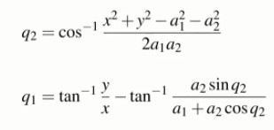

W15 <<
Previous Next >> video2
video1

Title:Inverse kinematics for a 2-joint robot arm using geometry
標題:使用幾何學的2連桿機器人手臂的逆運動學
We saw this simple two-link robot in the previous lecture about forward kinematics.
我們在上一堂關於正向運動學的講座中看到了這個簡單的雙連桿機器人。
The tooltip pose of this robot is described simply by two numbers,the coordinates x and y respect to the world coordinate frame.
該機器人的工具提示姿態由兩個數字簡單描述，坐標 x 和 y 相對於世界坐標系。
So,the problem here is that given x and y,we want to determine the joined angles,Q1 and Q2.
所以，這裡的問題是給定 x 和 y，我們要確定關節角度 Q1 和 Q2。
The solution that we're going to follow inthis particular section is a geometric one.
我們將在本節中遵循的解決方案是幾何解決方案。
We're going to start with a simple piece of construction.
我們將從一個簡單的結構開始。
We're going to overlay the red triangle on top of our robot.
我們將在我們的機器人上面覆蓋紅色三角形。
We know that the end point coordinate is x,y,so the vertical height of the triangle is y,the horizontal width is x.
我們知道終點坐標是x，y，所以三角形的垂直高度是y，水平寬度是x。
And, using Pythagoras theorem, we can write r squared equals x squared plus y squared.
並且，使用畢達哥拉斯定理，我們可以寫出 r 平方等於 x 平方加上 y 平方。 (r^2=x^2+y^2)
So far, so easy.
到目前為止，很容易。
Now, w’re going to look at this triangle highlighted here in red and we want to determine the angle α(alpha).
現在，我們將查看此處以紅色突出顯示的三角形，我們要確定角度 α(alpha)。
In order to do that, we need to use the cosine rule.
為了做到這一點，我們需要使用餘弦規則。
And, if you’re a little rusty on the cosine rule, here is a bit of a refresher.
而且，如果你對餘弦規則有點生疏，這裡有一點複習。
We have an arbitrary triangle.
我們有一個任意三角形。
We don’t have any right angles in it and we’re going to label the length of this edge as A and the angle opposite that edge, we’re going to label as little a.
我們沒有任何直角，我們將這條邊的長度標記為 A，而與該邊相對的角度，我們將標記為小 a。
And, we do the same for this edge and this angle, and this edge and this angle,So, all together, the sides are labelled capitals A, B and C, and the angles are labelled little a, little b, and little c.
並且，我們對這條邊和這個角做同樣的事情，這條邊和這個角，所以，所有的邊都被標記為大寫的A、B和C，而這些角被標記為小a、小b和小c .
So, the cosine rule is simply this relationship here.
所以，餘弦規則就是這裡的這種關係。 (A^2=B^2+C^2-2BCcosa)
It’s a bit like Pythagoras’ theorem except for this extra term on the end with the cos a in it.
它有點像畢達哥拉斯的定理，除了末尾有 cos a 的這個額外項。
Now, let’s apply the cosine rule to the particular triangle we looked at a moment ago.
現在，讓我們將餘弦規則應用於我們剛才看到的特定三角形
It’s pretty straightforward to write down this particular relationship.
寫下這種特殊關係非常簡單。
We can isolate the term cos α(alpha) which gives us the angle alpha that we’re interested in.
我們可以分離出術語 cos α(alpha)，它給出了我們感興趣的角度 α(alpha)。
And, it’s defined in terms of the constant link lengths, A1 and A2 and the position of the end effector, x and y.
而且，它是根據恆定連桿長度 A1 和 A2 以及末端執行器的位置 x 和 y 定義的。
We can write this simple relationship between the angles alpha and Q2
我們可以寫出角度 α(alpha) 和 Q2 之間的這種簡單關係
And, we know from the shape of the cosine function that cos of q2 must be equal to negative of cos α(alpha).
而且，我們從餘弦函數的形狀知道，q2 的 cos 必須等於 cos α(alpha) 的負數。
This time, let’s just write an expression for the cosine of the joined angle q2.
這一次，讓我們為連接角 q2 的餘弦寫一個表達式。
Now, we’re going to draw yet another red triangle and we’re going apply some simple trigonometry here.
現在，我們將繪製另一個紅色三角形，並在此處應用一些簡單的三角函數。
If we know Q2, then we know this length and this length of the red triangle.
如果我們知道 Q2，那麼我們就知道這個長度和這個紅色三角形的長度。
We can write this relationship for the sine of the joint angle q2.
我們可以為連接角 q2 的正弦寫出這種關係。
Now, we can consider this bigger triangle whose angle is β(beta) and this side length of this triangle is given here in blue.
現在，我們可以考慮這個更大的三角形，它的角是β(beta)，這個三角形的邊長在這裡用藍色給出。
And, the length of the other side of the triangle is this.
並且，三角形另一邊的長度是這個。
So, now we can write an expression for the angle beta in terms of these parameters here.
所以，現在我們可以在此處根據這些參數編寫角度 β(beta) 的表達式。
Going back to the red triangle that we drew earlier, we can establish a relationship between q1 and the angle beta.
回到我們之前畫的紅色三角形，我們可以建立q1和角度β(beta)之間的關係。
Introduce yet another angle, this one γ(gamma) and we can write a relationship between the angle γ(gamma) and the tooltip coordinates x and y.
引入另一個角度，這個γ(gamma)，我們可以寫出角度γ(gamma)和工具提示坐標 x 和 y 之間的關係。
Now, we can write a simple relationship between the angles that we’ve constructed, γ(gamma) and β(beta) and the joined angle we’re interested in which is q1.
現在，我們可以在我們構建的角度 γ(gamma) 和 β(beta) 與我們感興趣的連接角度 q1 之間寫出一個簡單的關係。
And, the total relationship looks something like this.
而且，整個關係看起來像這樣。
Quite a complex relationship, it gives us the angle of joined one, that’s Q1 in terms of the end effector coordinates y and x, and a bunch of constants, a1 and a2, and it’s also a function of the second joint angle, Q2.
一個相當複雜的關係，它給了我們連接的角度，即末端執行器坐標 y 和 x 的 Q1，以及一堆常數 a1 和 a2，它也是第二個關節角度 Q2 的函數
So, let’s summarize what it is that we have derived here
所以，讓我們總結一下我們在這裡得出了什麼
We have an expression for the cosine of Q2 and we have an expression for Q1
我們有 Q2 的餘弦表達式和 Q1 的表達式
Now, the cosine function is symmetrical about 0
現在，餘弦函數對稱於0
So, if we know the value of the cosine of Q2, then there are two possible solutions a positive angle and a negative angle.
所以，如果我們知道 Q2 的餘弦值，那麼有兩種可能的解：正角和負角。
We’re going to explicitly choose the positive angle. Which means that I can write this expression here.
我們將明確選擇正角。 這意味著我可以在這裡寫這個表達式。
And now, we have what we call the inverse kinematic solution for this two-link robot.
現在，我們有了這個雙連桿機器人的逆運動學解決方案。
We have an expression for the two joined angles, Q1 and Q2 in terms of the end effector pose x and y, and a bunch of constants.
我們有兩個連接角 Q1 和 Q2 的表達式，根據末端執行器姿勢 x 和 y 以及一系列常數。
You notice that the two equations are not independent.
你注意到這兩個方程不是獨立的。
The equation for Q1, in fact, depends on the solution for Q2.
事實上，Q1 的方程取決於 Q2 的解。
In this case, Q2 is negative and we’re going to write the solution for Q2 with a negative sign in front of the inverse cosine.
在這種情況下，Q2 是負數，我們將在反餘弦前用負號編寫 Q2 的解。
Now, we need to solve for Q1, so we’re going to introduce this particular red triangle, the angle beta that we solved previously, and the angle gamma which is defined in terms of y and x.
現在，我們需要求解 Q1，因此我們將介紹這個特定的紅色三角形、我們之前求解的角度β(beta) 以及根據 y 和 x 定義的角度γ(gamma)。
Now, we write a slightly different relationship between q1, gamma and beta, different to what we had before.
現在，我們在 q1、γ(gamma)和β(beta)之間寫出略有不同的關係，與我們之前的關係不同。
There’s a change of sign involved.
涉及到符號的變化。
Then, we can substitute all that previous equation and come up with this expression for Q1.
然後，我們可以替換之前的所有等式並得出 Q1 的這個表達式。
Again, there is a change of sign here.
同樣，這裡的符號發生了變化。
Previously, this was a negative sign.
原本，這是負號。
And, here in summary form is the solution for the inverse kinematics of our two-link robot when it is in this particular configuration, where Q2 is negative.
並且，這裡總結性地給出了我們的雙連桿機器人在這種特定配置下的逆向運動學的解決方案，其中 Q2 為負。
Let’s compare the two solutions, the case where q2 is positive and the case where q2 is negative.
讓我們比較兩個解決方案，q2 為正的情況和 q2 為負的情況。
W15 <<
Previous Next >> video2